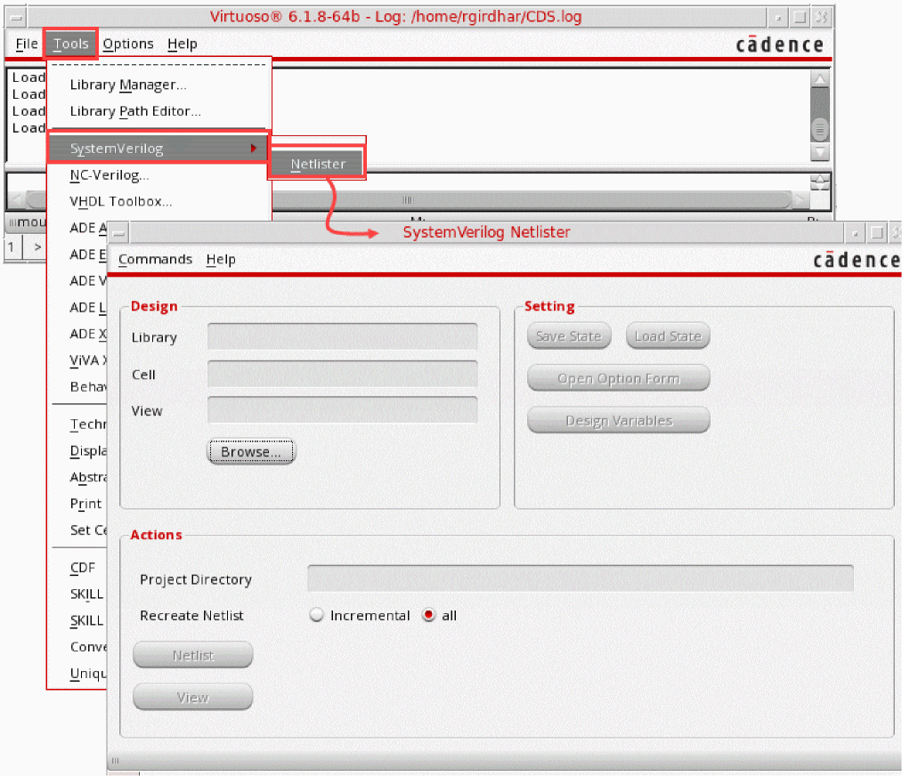

1
Introducing Virtuoso SystemVerilog Netlister
Digital system verification uses the SystemVerilog language extensively, and this has introduced the Digital-Mixed-Signal (DMS) use model. The DMS use model allows discrete models to represent analog circuits. SystemVerilog allows you to use user-defined type and resolution functions, which make the net obsolete as a scalar object.
These use-model changes require a netlister that supports modern constructs, imports data from a design database, and produces a simulator-compatible netlist. A netlister that has these capabilities can traverse the design hierarchy to build the complete structure of a netlist. In such cases, the hierarchy can be a schematic view and a text view, or only a text view.
Virtuoso® SystemVerilog Netlister is a utility that helps you generate netlists of digital SystemVerilog designs. This utility imports configuration views of digital designs for netlist generation, directly parses and accesses SystemVerilog and Verilog text models and creates LRM-compliant SystemVerilog configurations to generate compatible netlists.
The following table lists the main features of SystemVerilog Netlister:
Some of the advantages that SystemVerilog Netlister offers, which the NC Verilog Netlister does not, are as follows:
- Symbol is redundant for text-in-text instances
- OA update for text is redundant
- Schematic text sandwich structure
- Support for read-only libraries
- Full support for HED config
- Flexible flowchart control
- Advanced parameter and bus handling
- Simulator-independent netlist and binding
Additional Benefits of SystemVerilog Netlister
SystemVerilog Netlister provides a quick and efficient approach to netlist SystemVerilog designs and provides the following additional features and capabilities:
Prerequisites for Using SystemVerilog Netlister
Ensure that you have the following tools:
-
Cadence Xcelium
xrunutility 64-bit version (18.09 or higher)
Thexrunutility helps you specify all input files and options in a single command.
It can take SystemVerilog designs as input. The utility uses the Cadence Native Code tools to compile and netlist designs. -
Cadence Virtuoso 64-bit version (IC6.1.8 ISR8 or higher)
SystemVerilog Netlister is launched from Virtuoso.
Updating your .cshrc File
Ensure that you update your .cshrc file as follows:
Netlist Generation Flow
The generic flow for using SystemVerilog Netlister is as follows:
- Ensure that the environment is ready for using SystemVerilog Netlister. See Prerequisites for Using SystemVerilog Netlister.
- Launch SystemVerilog Netlister from Virtuoso. See Launching the SystemVerilog Netlister Interface.
- Specify your design. The design must have a SystemVerilog configuration (config) view at the leaf level. See Specifying a Design.
- Configure the options for generating a netlist of the specified design. See Setting Up Netlist Generation Options.
- Configure the design variables for the specified design. See Setting Up Design Variables.
- Generate a netlist of the design. See Generating a Netlist.
- View the netlist results as required. See Viewing a Netlist.
- Save settings as states or load saved states. See Managing States.
To know about any issues that you might encounter while using SystemVerilog Netlister, refer to the log in the Virtuoso CIW. The status of the last operation is also visible on the SystemVerilog Netlister window.
Launching the SystemVerilog Netlister Interface
SystemVerilog Netlister provides a simple and efficient interface to let you configure settings and options for netlist generation.
To launch the SystemVerilog Netlister application and specify the design:
- Launch Virtuoso.
-
In the CIW, choose Tools – SystemVerilog – Netlister.
The SystemVerilog Netlister window appears. Click Browse to specify the design.

To select the design and launch the SystemVerilog Netlister application:
- Launch Virtuoso.
- In the CIW, choose Tools – Library Manager. The Library Manager window appears.
-
In the Library Manager window, select a library from the Library list.
The cells present in the specified library appear in the Cell list. -
Select a cell from the Cell list.
The views present in the specified cell appear in the View list. -
Select a
dnl_state*view from the View list.
The SystemVerilog Netlister window appears and shows the design.
Understanding the Graphical User Interface
The following figure illustrates the main window of SystemVerilog Netlister:
The following table describes the main sections of the SystemVerilog Netlister window:
|
Specifies the library, cell, and view of the top-level design. For details, see Specifying a Design. |
|
|
Specifies the options and design variables required for netlist generation. For details, see Setting Up Netlist Generation Options and Setting Up Design Variables. |
|
|
Specifies the netlisting actions. You can generate or regenerate a netlist to view the netlisting results. For details, see Netlisting a Design. |
|
Return to top